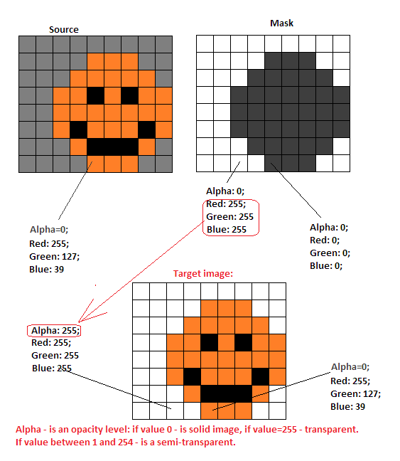
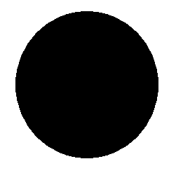

The SMBX come with opasity mask images using. For correctly work with old files and also for creating the new graphics for old SMBX engine, you must use the opasity mask images. If you will use the images in the PGE, recommended to use PNG graphics with own transparency without any mask images.
A mask is an Alpha-channel coding image. Each Pixel of the mask defining the
level of opacity of the same pixel on the source image:
Each Pixel of a mask - is a value of opacity for each pixel of the source image:


And target image will be valid (example placed over other image):

You will get broken image (example placed over other image):
This means - the colors of the mask applied on the image as alpha-channel values,
and you got the broken image.
Be careful while you creating the masked images manually!
Copyright © 2014-2015 Platformer Game Engine by Wohlstand project. All rights reserved.